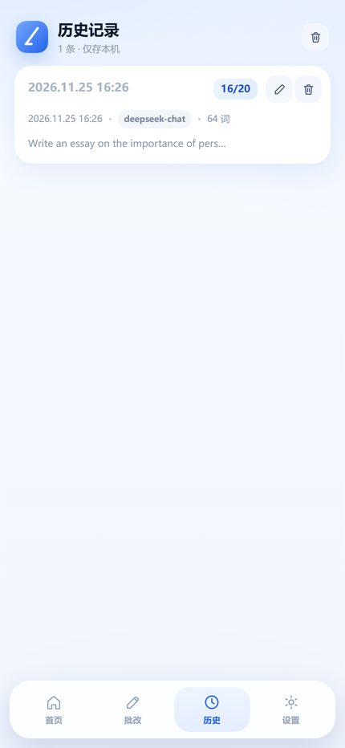
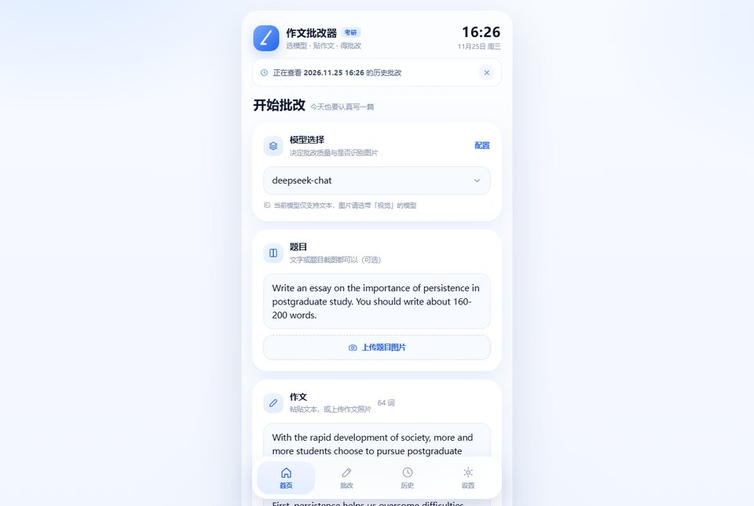
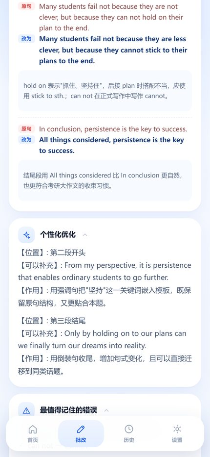

作文批改器 · 考研
纯前端的考研英语作文 AI 批改工具：选模型、贴作文、得批改。作文、历史、API Key 全部只存在你自己的浏览器里。
| 在线使用 | https://lulu3103.github.io/composition-correct/ |
| 图文说明书 | https://lulu3103.github.io/composition-correct/manual.html |
| 安卓 App | 下载 APK |
| 当前版本 | V6.0（正式版） |
| 技术形态 | 原生 HTML / CSS / JavaScript，无构建、无依赖、无后端 |

一、它能做什么
考研英语作文写完之后，你可以把题目和作文交给 AI 批改：它按你内置的「八段式」提示词，逐条给出修改建议、逐句批改、模板个性化优化、记忆点、积累表达、完整修改稿和评分。
整个过程不需要注册、不需要登录、没有服务器：网页是纯静态的，你的作文、历史记录和 API Key 都保存在当前浏览器里，只有批改时才会把作文发给你自己选择的服务商。
适合：备考考研英语一/二的学生，想快速知道自己作文哪里扣分、怎么改、能拿几分。
二、界面一览
| 首页 | 批改结果 |
|---|---|
|  |
| 历史记录 | 设置 |
|---|---|
 |
桌面浏览器打开时会居中显示为手机宽度，方便对照手机端效果：

三、快速开始（约 3 分钟）
- 打开 https://lulu3103.github.io/composition-correct/。
- 进入 设置 → 选择服务商 → 填写 API Key → 点 保存配置。
- 点 获取可用模型，勾选要用的模型加入列表（没有列表就手动填模型名）。
- 回到 首页：选模型，填题目和作文（文字或图片都可以）。
- 点 提交批改，结果会显示在「批改」页，同时自动存进「历史」。
第一次使用必须先在设置里配置 API Key，否则提交时会提示去设置。
四、功能详解
4.1 首页
- 标题栏：Logo、应用名、实时时间与日期。
- 模型选择：下拉选择当前服务商的模型；卡片上会提示当前模型是否支持图片识别（带「视觉」标记的模型才能读图片）。
- 题目：可以输入文字，也可以「上传题目图片」（最多 3 张）；两者可同时存在，模型会优先按图片中的要求理解题目。
- 作文：粘贴文本，或拍照 / 从图库上传作文图片（最多 3 张）。
- 提交批改：一键提交；提交后会自动跳到「批改」页并实时显示模型返回的内容。
4.2 批改结果
结果按三大章节组织：修改建议、修改作文、作文评分。每一张卡片都可以折叠：
- 默认展开「总体评价」和「得分详情」，其余收起；
- 收起时右侧显示一行摘要（例如逐句批改显示第一条原句）；
- 顶部 全部展开 / 全部收起 一键切换；
- 报告头部直接显示题目、模型、时间与总分。
展开「逐句批改」可以看到原始的对照格式：

点击「全部展开」后是完整报告：

卡片内容说明：
| 卡片 | 内容 |
|---|---|
| 题目要求与完成情况 | 是否完成任务、是否偏题、字数、文体 |
| 总体评价 | 当前水平、优点、最影响分数的 2–3 个问题 |
| 逐句批改 | 有问题的句子：原句 → 改为 → 说明 |
| 个性化优化 | 在模板基础上可以补充的表达、位置与作用 |
| 最值得记住的错误 | 3–5 条可迁移的记忆点 |
| 最值得积累的表达 | 表达 + 可用于什么场景 |
| 修改后的完整作文 | 保留原结构、可直接参考的修改稿，可一键复制 |
| 得分详情 | 总分环形图、档次、预估区间、得分优势、主要扣分点 |
| 原始作文 | 提交时的文字或图片 |
底部还有 复制全文 和 重新批改。
4.3 历史记录
- 每次批改自动保存，默认以批改时间命名，可重命名（点铅笔图标）。
- 每条显示时间、使用模型、字数与得分；可单独删除或一键清空。
- 点任意一条，会同时把题目和作文回填到首页，并在批改页还原当时的批改结果。
4.4 设置
配置完成后，「服务商与模型」会自动收起，只显示当前服务商、模型和配置状态，点一下展开编辑。
- 服务商：内置 DeepSeek、OpenAI、通义千问、智谱 GLM、Kimi、硅基流动；可「+ 新建自定义」保存多套自建接口（名称 / 接口地址 / Key）。
- 每个服务商独立保存自己的地址、Key 和模型列表，切换时互不覆盖；改动后需点「保存配置」才生效，未保存会有提示。
- 获取可用模型：从服务商的
/models接口拉取真实列表，支持搜索、勾选多个、自动标注视觉模型；也可手动添加模型名。

- 提示词：可编辑，也可一键恢复默认。
- 数据：导出 / 导入 JSON 备份、清空本地数据。
- 关于：使用说明、网站声明、版本号。
4.5 图片批改
- 题目和作文都支持图片，各自最多 3 张，图片会先压缩（长边 ≤ 1400px）。
- 只有带「视觉」标记的模型会读取图片；在模型列表里点「文本 / 视觉」标签即可切换。
- 浏览器无法解码 HEIC/HEIF 时会提示改用拍照或转成 JPG。
五、数据与隐私（安全说明）
这是本项目的核心设计：没有服务器，没有账号，没有统计。
数据存在哪里
- 作文、批改结果、历史记录、服务商配置与 API Key，全部保存在浏览器的 localStorage（键名以
essayGrader.开头）。 - 页面不写 Cookie、不使用第三方存储、不做任何埋点。
API Key 去哪里
- Key 只保存在你本机；不会上传到本项目的任何地方（本项目也没有可以上传的服务器）。
- 提交批改或拉取模型时，Key 只作为
Authorization: Bearer <你的 Key>请求头，直接发送到你自己在设置里填写的接口地址。 - 导出备份默认剔除 Key；只有你主动选择「含 Key」时才会写进备份文件。
页面加载了什么
- 全部脚本、样式、图标都在仓库内，无 CDN、无第三方脚本、无外部字体、无统计 SDK。
- 整站通过 HTTPS 访问；批改请求同样走 HTTPS（HTTP 接口会被浏览器按混合内容策略拦截）。
已知边界（请务必了解）
- 能直接使用你设备或浏览器的人（或拥有你浏览器权限的扩展）可以读取 localStorage 中的 Key；公共电脑上用完请点「清空本地数据」。
- 网站是公开的，但每个人的数据只存在各自的浏览器里，互不可见。
- 不要分享选择了「含 Key」的备份文件。
- 页面本身不含 XSS 注入点（用户内容与图片 URL 均做了转义），但请保持使用官方地址访问。
六、常见问题
| 问题 | 说明 |
|---|---|
| 提示「网络连接失败」 | 服务商不允许浏览器跨域（CORS），或地址 / 网络异常；换一家支持 CORS 的服务商即可 |
| 「获取可用模型」报错 | 该服务商未开放 /models 接口，用「手动添加模型名称」即可 |
| 「测试连接」失败但批改能用 | 已做兼容：测试请求被模型拒绝时会改用 /models 验证地址与 Key，并给出结论 |
| 图片识别不到文字 | 当前模型不支持视觉，换带「视觉」标记的模型 |
| 图片上传失败 | 可能是 HEIC 格式；改用拍照或先转 JPG，单张上限 30MB |
| 评分没有显示 | 检查是否被截断（页面会提示「长度上限」）；或换输出更长的模型重试 |
| 换设备后数据没了 | 数据只在本机，请用「导出备份 / 导入备份」迁移 |
| 切换服务商后配置乱了 | V3 起每个服务商独立保存，V6 起配置完成后会自动收起 |
七、安装与使用
网页版
直接用手机或电脑浏览器打开 https://lulu3103.github.io/composition-correct/。
安装到手机主屏幕（PWA）
- iPhone：Safari 打开 → 分享 → 「添加到主屏幕」。
- Android：Chrome 打开 → 菜单 → 「安装应用 / 添加到主屏幕」。
安装后是全屏启动，界面与浏览器一致。
安卓 APK
在 Releases 下载 composition-correct-v6.0.apk，安装时允许「安装未知来源应用」即可。
- APK 内置了网页资源，离线也能打开界面；批改时仍需联网访问你配置的服务商。
- 通过自签名证书打包（非应用商店分发），首次安装需要手动允许。
八、技术说明
- 单页应用，原生 ES Module，无构建步骤、无 npm 依赖。
- 结果解析兼容多种模型输出：八段编号、三段括号、Markdown 加粗、表格、无冒号、区间分等写法。
- 批改请求使用 SSE 流式输出，长回答可实时看到进度。
- PWA：
manifest.webmanifest+sw.js，离线壳缓存；版本号同时写在store.js（APP_VERSION）与sw.js（VERSION）。
目录结构：
.
├── index.html # 单页外壳
├── manifest.webmanifest # PWA 清单
├── sw.js # 离线缓存
├── assets/
│ ├── css/app.css # 全部样式
│ ├── icons/ # 图标
│ └── js/
│ ├── app.js # 路由与批改任务
│ ├── api.js # OpenAI 兼容接口 / SSE / 模型列表
│ ├── parse.js # 八段解析与评分抽取
│ ├── prompt.js # 默认提示词
│ ├── store.js # 本地存储与多服务商配置
│ ├── utils.js # DOM / Markdown / 图片压缩
│ └── views/ # 首页 / 批改 / 历史 / 设置
├── docs/images/ # 说明书配图
├── manual.html # 在线图文说明书（由 README 生成）
└── tools/ # 图标生成、发布脚本、README → manual.html浏览器要求：支持 ES Module 与 fetch 的现代浏览器（Chrome / Edge / Safari / Firefox 近两年版本）。
九、开发与部署
本地预览（无需构建）：
python -m http.server 8123
# 浏览器打开 http://127.0.0.1:8123发布到 GitHub Pages：
- 推送到
main分支，仓库 Settings → Pages 选择main / (root)； - 若本机
git push不稳定，可用 GitHub API 发布：
python tools/deploy.py --dry-run
python tools/deploy.py发版时记得同步修改 assets/js/store.js 的 APP_VERSION 和 sw.js 的 VERSION，否则浏览器可能继续使用旧的离线缓存。
十、更新日志
V6.0（2026-11-25 · 正式版）
- 修复图片提交时评分识别不到：兼容加粗 / 表格 / 无冒号 / 区间分等写法，评分段缺失时回退全文查找。
- 输出被截断时给出提示卡片。
- 设置页「服务商与模型」可折叠，配置完成后自动收起。
V5.0（2026-11-25 · 正式版）
- 题目支持图片；修复图库上传兼容性（空 MIME / octet-stream / HEIC 提示）。
V4.0（2026-11-25）
- 批改结果卡片可折叠，新增全部展开 / 收起。
- 修复设置页事件重复绑定导致的模型列表串台、测试连接误报。
V3.0（2026-11-25）
- 多服务商配置：下拉切换、独立保存、多套自定义服务商。
V2.0（2026-11-25）
- 模型列表改为从服务商获取；提示词换成八段式，批改页按八段呈现。
V1.0.0（2026-11-25）
- 首个版本：四页结构、文本/图片批改、流式输出、历史、本地设置与备份、PWA。
十一、免责声明
AI 批改结果仅供学习参考，不代表真实考试评分。因使用本工具产生的任何后果由使用者自行承担；请遵守你所使用 AI 服务商的服务条款。